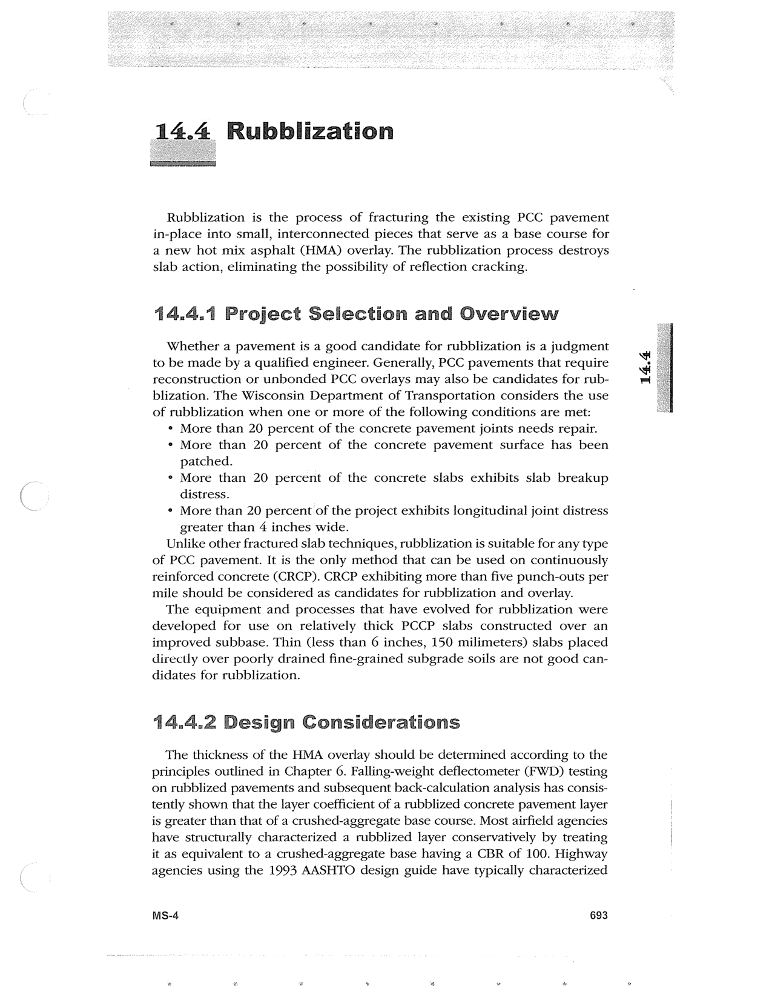

PDF page 727 · book page sequence 693


Searchable transcription
Unproofread OCR · 342 detected words; mean OCR confidence 95.33. Check technical values, symbols and table columns against the scan.
14.4 Rubblization
Rubblization is the process of fracturing the existing PCC pavement in-place into small, interconnected pieces that serve as a base course for a new hot mix asphalt (HMA) overlay. The rubblization process destroys slab action, eliminating the possibility of reflection cracking.
14.4.1 Project Selection and Overview
Whether a pavement is a good candidate for rubblization is a judgment to be made by a qualified engineer. Generally, PCC pavements that require reconstruction or unbonded PCC overlays may also be candidates for rub- blization. The Wisconsin Department of Transportation considers the use of rubblization when one or more of the following conditions are met:
¢ More than 20 percent of the concrete pavement joints needs repair.
* More than 20 percent of the concrete pavement surface has been
patched.
° More than 20 percent of the concrete slabs exhibits slab breakup
distress.
* More than 20 percent of the project exhibits longitudinal joint distress
greater than 4 inches wide.
Unlike other fractured slab techniques, rubblization is suitable for any type of PCC pavement. It is the only method that can be used on continuously reinforced concrete (CRCP). CRCP exhibiting more than five punch-outs per mile should be considered as candidates for rubblization and overlay.
The equipment and processes that have evolved for rubblization were developed for use on relatively thick PCCP slabs constructed over an improved subbase. Thin (less than 6 inches, 150 milimeters) slabs placed directly over poorly drained fine-grained subgrade soils are not good can- didates for rubblization.
14.4.2 Design Considerations
The thickness of the HMA overlay should be determined according to the principles outlined in Chapter 6. Falling-weight deflectometer (FWD) testing on rubblized pavements and subsequent back-calculation analysis has consis- tently shown that the layer coefficient of a rubblized concrete pavement layer is greater than that of a crushed-aggregate base course. Most airfield agencies have structurally characterized a rubblized layer conservatively by treating it as equivalent to a crushed-aggregate base having a CBR of 100. Highway agencies using the 1993 AASHTO design guide have typically characterized
MS-4 693
14.4